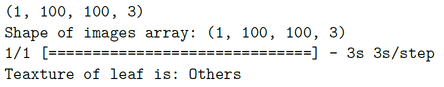

3 Technical Components
3.1 CNN Classification Model
The classification CNN predicts which semantic shape category is present on the leaf — it does not predict the disease name directly. There are 7 output classes, each corresponding to a visual pattern observable on diseased leaves.

The model is built entirely with SeparableConv2D layers, which factorize the convolution into depthwise + pointwise operations, making the model lightweight (87K parameters) while maintaining accuracy.
| Layer | Output Shape | Parameters |
|---|---|---|
| InputLayer | (None, 256, 256, 3) | 0 |
| Conv2D (32 filters, 3×3, ReLU) | (None, 256, 256, 32) | 896 |
| SeparableConv2D (32→128, ×5 blocks) | (None, 128→2, 128→2, 128) | ~68K |
| GlobalAveragePooling2D | (None, 128) | 0 |
| Dense (32, ReLU) | (None, 32) | 4,128 |
| Dense (7, softmax) | (None, 7) | 231 |
| Total Trainable Parameters | 87,207 |
Optimizer: Adam · Loss: sparse_categorical_crossentropy · Input: 256×256 RGB · Validation accuracy: 95.28%

# Key model definition — SeparableConv2D block pattern model = Sequential([ Conv2D(32, (3,3), activation='relu', input_shape=(256,256,3)), MaxPooling2D(), SeparableConv2D(32, (3,3), activation='relu'), MaxPooling2D(), SeparableConv2D(64, (3,3), activation='relu'), MaxPooling2D(), SeparableConv2D(128, (3,3), activation='relu'), MaxPooling2D(), # ... additional blocks with 128 filters ... GlobalAveragePooling2D(), Dense(32, activation='relu'), Dense(7, activation='softmax') # 7 semantic classes ]) # Total: 87,207 trainable parameters
3.2 CNN Segmentation Model
When the classification CNN predicts spots or stripes — features that are spatially localized — a segmentation model is run to precisely locate the diseased regions on the leaf. This localization is necessary because the color of the diseased area must be extracted separately from the background/healthy leaf color.
The segmentation model is a fully-convolutional U-Net-style architecture with skip connections (Conv2DTranspose upsampling + Concatenate) and 1.45 million trainable parameters. It was trained on 3,000 images from a separate leaf segmentation dataset and achieves 93% accuracy and 0.73 mean IoU.
# U-Net skip-connection pattern used in the segmentation model # Encoder: SeparableConv2D + MaxPooling2D # Decoder: Conv2DTranspose (upsampling) + Concatenate (skip) + SeparableConv2D # Final layer: per-pixel binary mask (diseased vs. healthy) SeparableConv2D_27 = SeparableConv2D(64, (1,1), activation='softmax') # Output shape: (None, 256, 256, 2) — 1.45M parameters
3.3 NLP / Named Entity Recognition
The NER model is built on spaCy's tok2vec pipeline. It processes a disease description sentence and identifies four entity types, which are then mapped to database fields.
The NER model was trained on 15,400 documents (80% train / 20% dev), generated by paraphrasing and augmenting 120 real disease descriptions from PlantVillage using GPT APIs — producing 36,000 total training records. The model achieves 98% F1-score across all entity types.
| Entity Type | Per-Entity F1 | Examples |
|---|---|---|
| PLANT | 99.77% | Apple, Tomato, Corn, Grape, Pepper |
| DISEASE | 99.35% | Powdery Mildew, Rust, Blight, Black Rot |
| COLOR | 98.34% | Yellow, Brown, Dark Green, Gray |
| SEMANTIC | 99.27% | Spots, Stripes, Patches, Powdery |
| Overall | 98.98% |
# The trained pipeline has two components: tok2vec + ner import spacy nlp = spacy.load("en_core_web_trf") # or en_core_web_lg for lighter use # After training (output saved as .spacy files), run inference: doc = nlp("apple crops affected by cedar rust have spots with brown, yellow colors") for ent in doc.ents: print(ent.text, ent.label_) # apple → PLANT # cedar rust → DISEASE # spots → SEMANTIC # brown → COLOR # yellow → COLOR